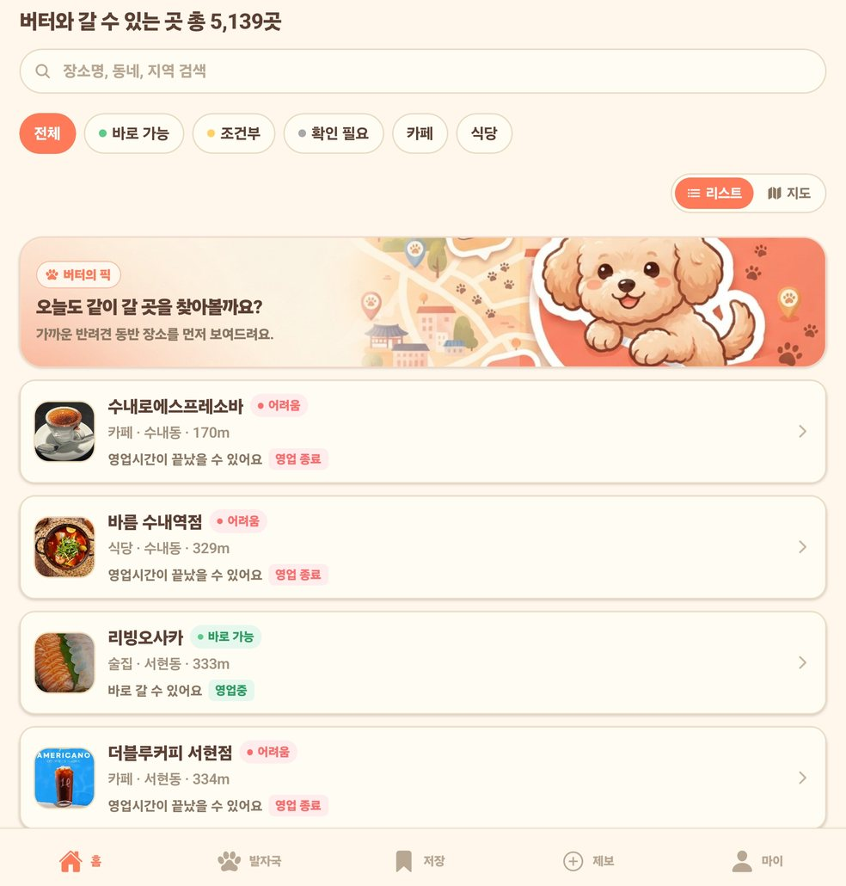
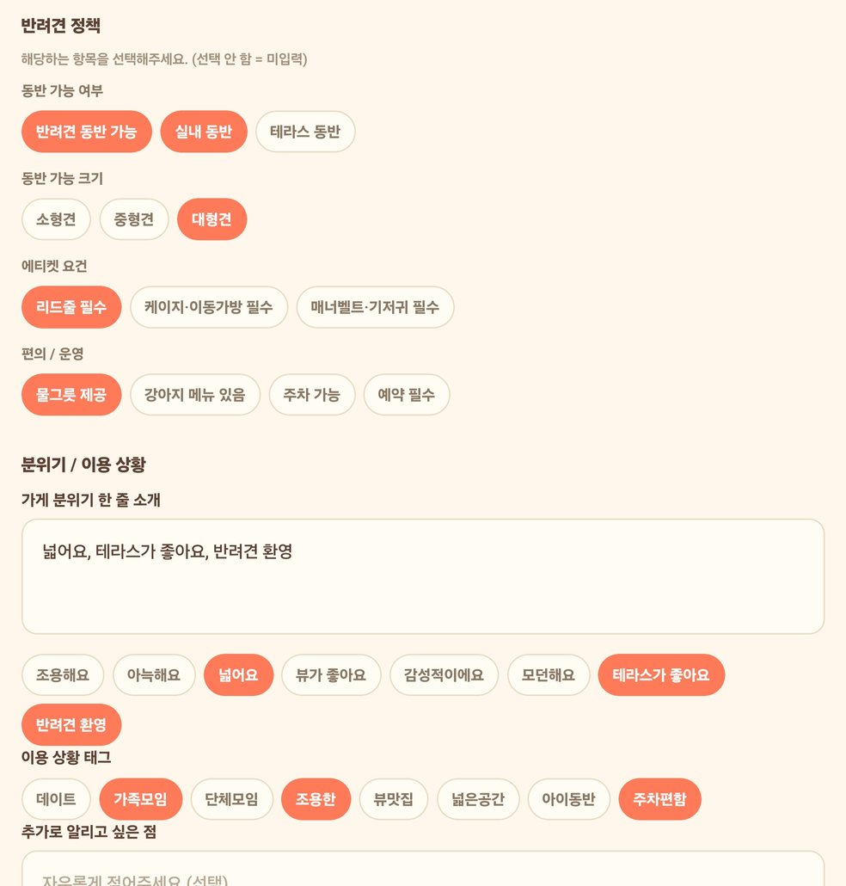
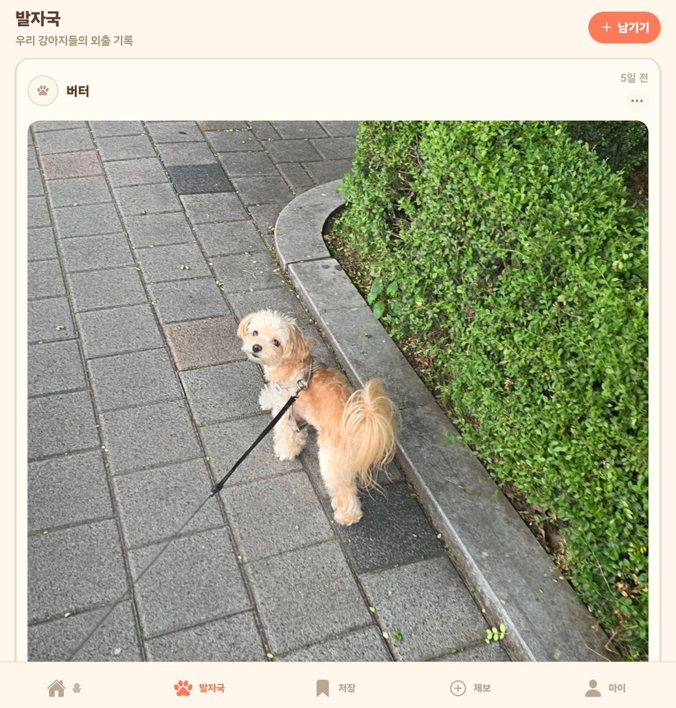
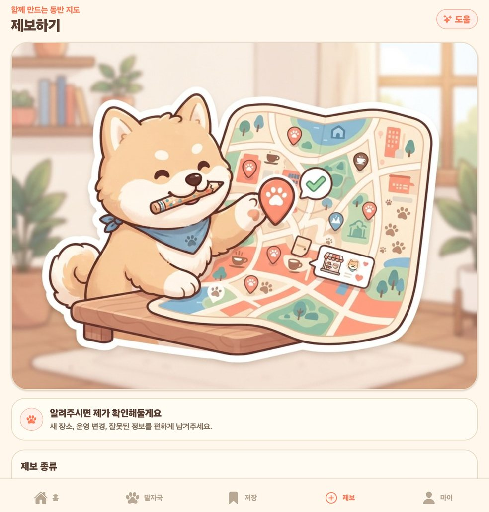
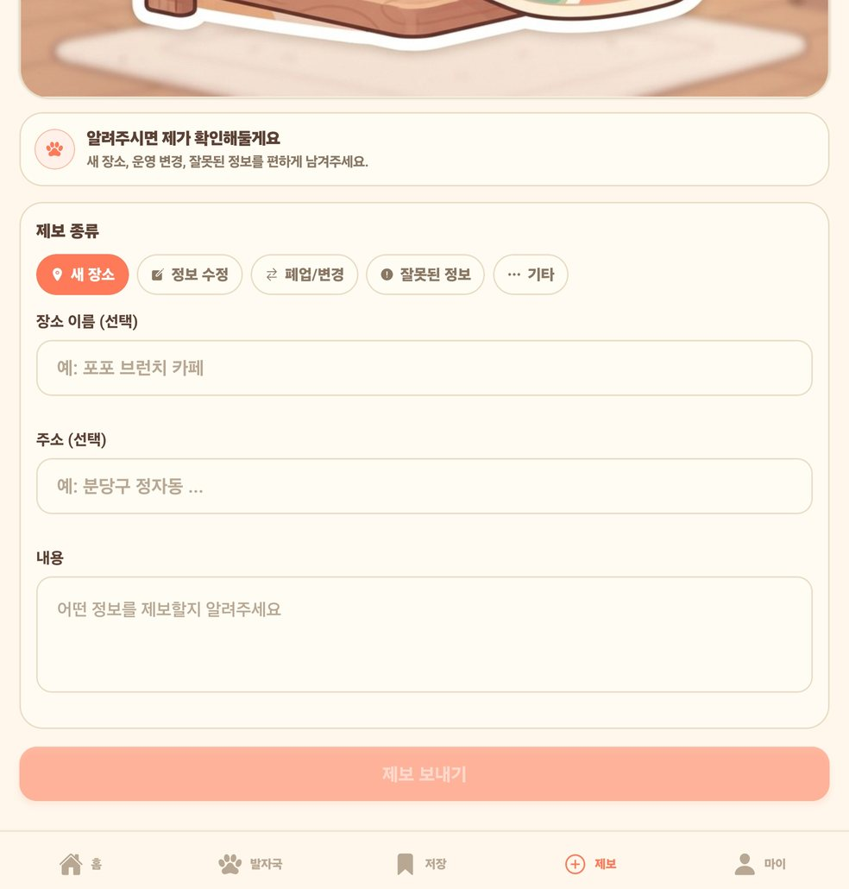
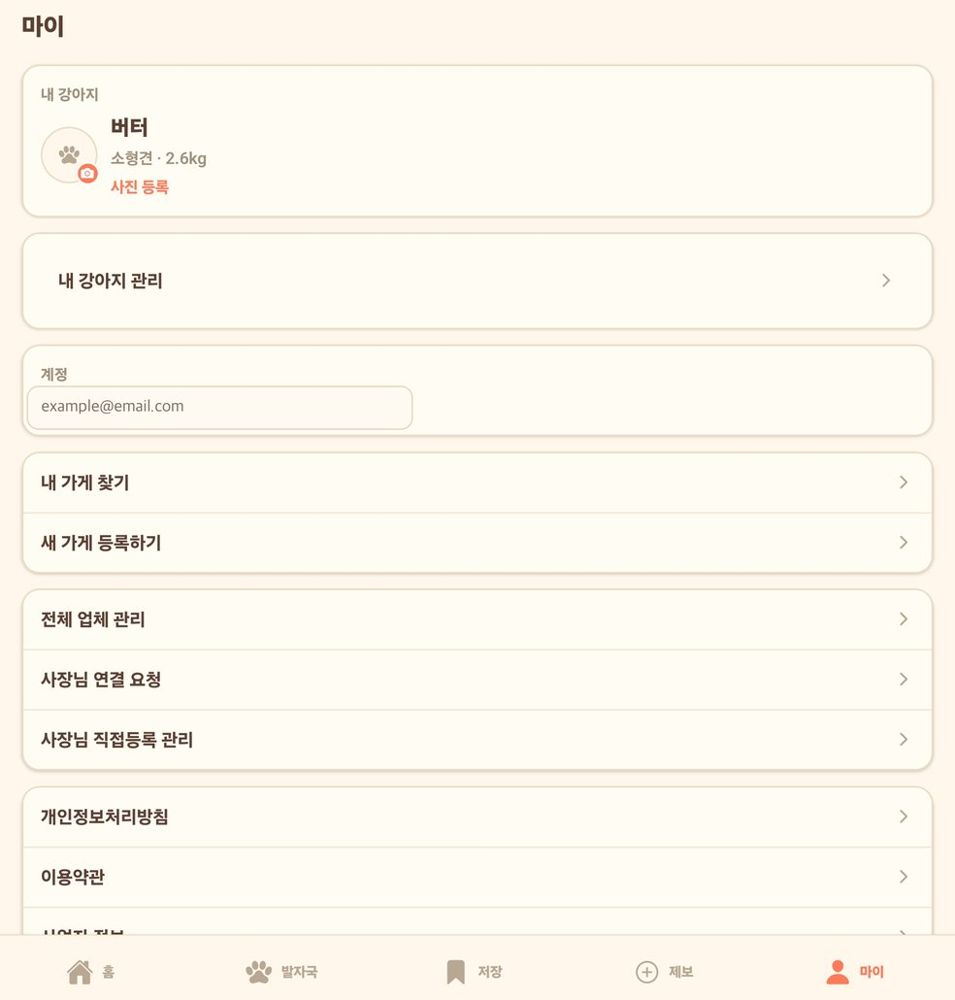
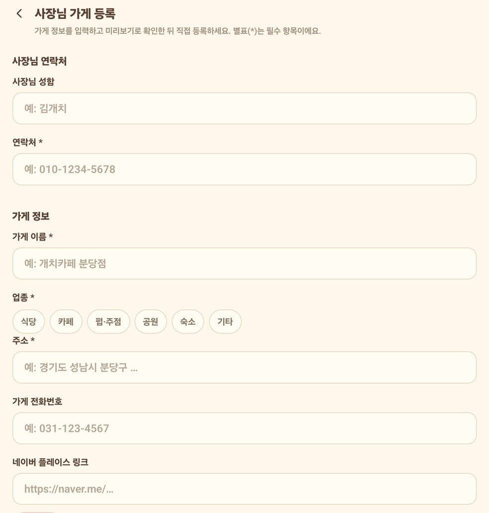
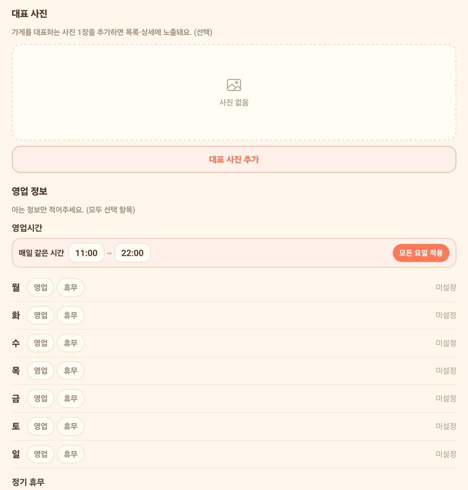
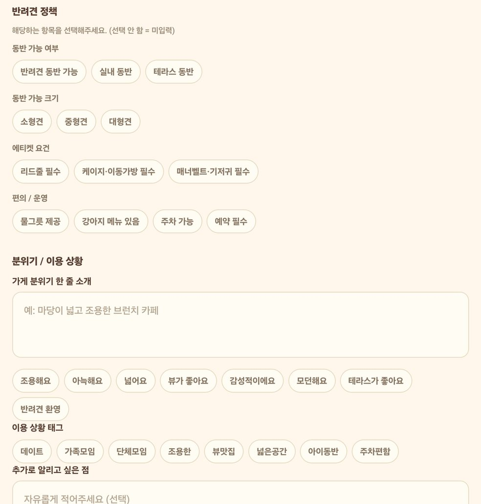

바로 가능
등록된 정보와 내 강아지 조건상 바로 방문 가능한 후보입니다.
처음 사용하는 보호자부터 가게 정보를 직접 등록하는 사장님까지, 실제 화면 10장으로 개치테이블의 모든 주요 기능을 따라 해보세요.


화면 아래의 탭을 기준으로 이동합니다. 처음에는 홈에서 장소를 찾고, 마음에 들면 저장하고, 다녀온 뒤 발자국을 남겨보세요.
강아지 프로필과 현재 위치를 기준으로 장소를 둘러보고, 검색·이용 가능 상태·업종 필터로 후보를 줄입니다.
상단 숫자는 현재 화면에 표시되는 장소 수입니다. 데이터가 추가되거나 검색·필터를 적용하면 숫자가 달라질 수 있습니다.
등록된 정보와 내 강아지 조건상 바로 방문 가능한 후보입니다.
리드줄·가방·테라스 등 추가 조건을 지켜야 할 수 있습니다.
정책 정보가 부족하거나 변경 가능성이 있어 매장 확인이 필요합니다.
현재 등록된 조건상 동반 이용이 어렵다고 판단된 장소입니다.
매장 운영시간과 반려견 정책은 현장에서 바뀔 수 있습니다. 특히 대형견, 실내 좌석, 이동가방, 예약 조건은 출발 전 전화로 다시 확인해 주세요.
발자국은 우리 강아지의 외출 기록을 모아보는 공간입니다. 공개 피드보다 내 반려생활 기록에 가깝게 사용할 수 있습니다.
강아지 이름, 작성 시점과 사진이 카드에 표시됩니다. 카드 오른쪽 위의 더보기 메뉴에서 제공되는 관리 기능을 이용할 수 있습니다.

장소 상세의 저장 버튼을 누르면 ‘나중에 다시 볼 장소’에 모입니다. 아직 저장한 곳이 없다면 빈 화면의 안내 버튼으로 바로 탐색할 수 있습니다.
제보는 바로 공개되는 게시물이 아니라 운영 확인을 위한 자료입니다. 새 장소, 정보 수정, 폐업·변경, 잘못된 정보, 기타 중 알맞은 종류를 선택합니다.


마이 탭에서 강아지 이름·크기·체중을 확인하고, 계정과 가게 관련 기능으로 이동합니다. 공개 설명서에는 실제 이메일을 예시 주소로 바꾸었습니다.

마이 → 새 가게 등록하기에서 시작합니다. 별표(*)는 필수 항목이며, 입력을 마친 뒤 미리보기로 고객에게 보이는 내용을 확인하고 직접 등록합니다.
사장님 연락처, 가게명, 업종, 주소, 전화번호, 네이버 플레이스 링크, 대표 사진, 영업시간과 반려견 정책을 준비하세요.
모르는 정책은 추측해서 선택하지 마세요. ‘선택 안 함’은 미입력 상태이며, ‘불가’라는 뜻이 아닙니다.

대표 사진은 목록과 상세에 노출됩니다. 영업시간은 ‘모든 요일 적용’을 이용하거나 요일별 영업·휴무 상태와 시간을 각각 설정합니다.

주황색은 선택된 항목이고, 테두리만 있는 항목은 미선택입니다. 알고 있는 사실만 선택하고 제한 조건은 자유 입력란에 구체적으로 적어주세요.

‘대형견 가능’만 누르지 말고 실내·테라스 구분, 최대 허용 체중, 리드줄·이동가방·기저귀 조건과 예약 필요 여부를 추가 설명에 적어야 보호자가 정확히 판단할 수 있습니다.
방문 전 확인이 필요한 상황과 정보 수정 방법을 모았습니다.
등록된 정보와 강아지 조건상 가능성이 높다는 뜻입니다. 매장 정책, 좌석, 영업시간은 바뀔 수 있으므로 장거리 이동, 대형견, 실내 동반, 단체 방문이라면 전화 확인을 권장합니다.
현재 장소별 대형견 허용 크기와 조건을 순차적으로 확인하고 있습니다. 정보가 없으면 ‘확인 필요’로 보고 매장에 문의한 뒤, 확인한 내용은 제보 탭에 남겨주세요.
등록된 영업시간을 바탕으로 한 안내이며 임시휴무, 브레이크타임, 조기 마감은 즉시 반영되지 않을 수 있습니다. 제보 → 정보 수정 또는 폐업/변경으로 알려주세요.
아닙니다. 사장님 반려견 정책 화면의 ‘선택 안 함’은 미입력 상태입니다. 확실히 아는 사실만 선택하고, 제한이나 예외는 추가 설명에 적어주세요.
하단 제보 탭에서 ‘새 장소’를 선택하고 장소명, 주소와 확인한 내용을 입력하세요. 사장님이라면 마이 → 새 가게 등록하기에서 사진·영업시간·반려견 정책까지 직접 등록할 수 있습니다.
저장은 앞으로 가고 싶은 장소를 모으는 기능이고, 발자국은 강아지와 다녀온 외출 사진과 기억을 남기는 기능입니다.
장소를 찾고, 방문 조건을 확인하고, 마음에 들면 저장하세요. 다녀온 뒤에는 우리 강아지의 발자국으로 기록할 수 있습니다.